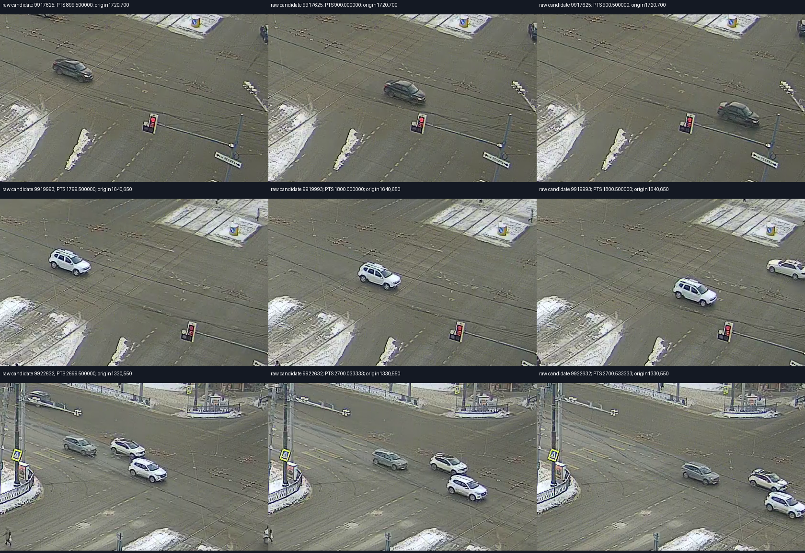
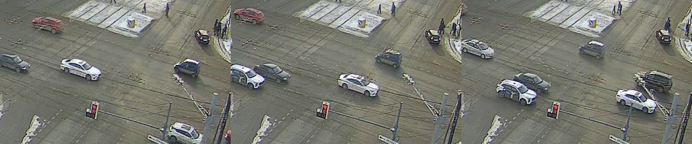

Независимая проверка четырёх новых машин на 15-й, 30-й, 45-й и 55-й минутах поддержала прежний сдвиг JSON относительно PTS: +1,253838 с. Ни геометрия, ни сдвиг не переобучались; состояния светофора не использовались для синхронизации.
Максимальные расхождения по машинам: 10,6 / 13,3 / 33,9 / 18,6 пикселя при заранее установленном допуске 50. Нулевой сдвиг не прошёл. Общий допустимый диапазон сдвига 1,127–1,369 с условен относительно фиксированной геометрии, ручного выбора точки автомобиля и его личности. Погрешность аппаратных часов и экспозиции не измерена.
Открыть видео с прогнозом до/после. Выберите исходный MP4 Свердловского. Он остаётся на компьютере.
Поправка времени JSON: зелёный −2,644 с, красный −3,685 с. Прежние 3,898 /4,939 с включали сдвиг часов. Правило и значения настройки взяты с первого участка 900–1500 с и переведены в подтверждаемую шкалу JSON. Второй участок 2700–3300 с уже исследовался раньше; это повторная оценка прежней временной проверки, а не новый независимый тест.
| Включение | Метки | MAE середины до → после | Средняя дистанция до интервала после | В пределах 0,5 с от интервала |
|---|---|---|---|---|
| green | 6 | 2.466 → 0.192 с | 0.000 с | 6/6 |
| red | 5 | 3.632 → 0.053 с | 0.033 с | 5/5 |
Эти метрики рассчитаны при фиксированном сдвиге 1,253838 с. Неопределённость синхронизации записана отдельно в mapped_main_truth.json, а не скрыта внутри малых средних ошибок. Один зелёный интервал имеет ширину 2,467 с из-за мерцания LED; его середина не является известным моментом. Один лишний относительно разметки прогноз красного приходится на неразрешённый видеоцикл. Другие головы, стрелка, жёлтый и мигающий режим этим не проверены.
Свердловский: стрелка N→E и в видео, и в JSON; прежнее описание поворота пользователь исправил. Глобальная перестановка E/W из этого не следует. Энтузиастов: видимая голова обслуживает E; основные сигналы E/W совпадают по подтверждению пользователя. Это не два независимых видеонаблюдения.
Видео-only метки сохранены, но независимое совмещение машин и времени с JSON не установлено. Единственная дополнительная попытка пространственного совмещения не прошла проверку: максимум ошибки133,5 пикселя и пересечение проектного горизонта с дорогой. Неуспешная модель сохранена, её часы не приняты; точность в секундах по этой паре пока не посчитана.
Для продолжения полезна ручная проверка конкретных пар машина/track ID на кадрах или документированное преобразование координат поставщика. Дополнительные файлы не запрашиваются: используем переданные материалы. Основной алгоритм и три прежних профиля не менялись: отдельно экспортированы видеометки в шкале JSON и исправленные оценки основного N.
22 метки в шкале JSON с интервалами · Калиброванные оценки N · Фиксированные поправки · Контрольные пары и метрики

